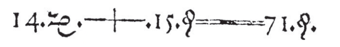
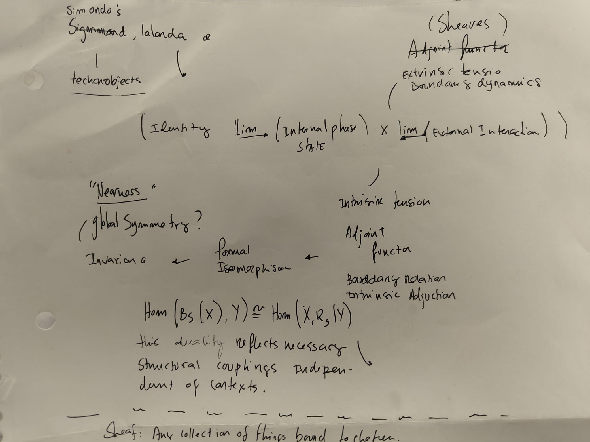

On Identity: Ideas On Being & Becoming
![]()
This paper interrogates the ontological foundations of identity. Not particularly aiming to challenge traditional notions of fixed essences, rather, exploring possible empirically adequate formalisms for the being and becoming of things.
I celebrate myself, and sing myself,
And what I assume you shall assume,
For every atom belonging to me as good belongs to you.
Song of Myself
Walt Whitman
(1892 version)
1 Introduction
What does it mean for a thing to be itself? The following note explores Identity, through an approach that is intentionally interdisciplinary, colouring outside the lines so to speak. At its core, this question asks of us to discern and explain what are the criteria and conditions and the eventful fortune allowing for a proto-thing to be, towards becoming a thing, distinct, separated, and identifiable.
Traditionally, identity has been posed as an intrinsic property, defined by an immutable essence 1. Yet, this precedent, was followed by a vast, and accumulated body of knowledge, and ongoing process of examining why and how is a thing a thing as a central metaphysical and ontological question, where and great philosophers, thinkers and poets, have wrestled with what makes an entity a “thing” as opposed to mere stuff, a property, apart from nothing.
1 Aristotle’s ousia
2 Bill Brown notes that “thingness” comes when habitual relationship to an object is disrupted, forcing a reconfiguration of our relation to it. Thus, a “thing” is less an intrinsic property and more a manifestation of a particular subject-object relation
Heidegger, distinguishes between objects and things arguing that thingness is not simply a matter of physical properties or scientific description, but is deeply connected to how things are encountered by humans in their practical and conceptual lives (Heidegger 1967). Drawing from Heidegger and critical theory, Thing theory, further explores the distinction between objects, with clear roles and uses, and things ,which assert themselves when they break down or elude understanding(Brown 2001), 2 and while Hegel and Mead argued that identity arises dialectically through interaction with the “other”, I wonder if the relational aspect holds consistently outside a human-centric context.

When brimming the foundations of logic into the origin and nature of identity, we find relevant thoughts on how something bears a relation to itself, and the conventional equivalence expression, such as \((x=x)\) (Lawvere 2003), where the Law of Identity \(\forall x(x = x)\) gives way to relational predicates such as \(x =_F y\) (x is the same F as y) (“Identity and Contextual Semantics in Complex Systems” 2019) (Müller 2023).
Whichever name we chose to represent this, or any other “thing”, is a reference to it, thus it would be quite a reduction to say A thing is a thing as a ball is a ball. However, Aristotle’s attempts to specify identity through distinction, and conversely, via tautological expressions of identity, the relation a thing bears with itself seem to be partially useful, as the relations it holds to what is not “itself”, may reveal a sort of proprietary and informing uniqueness. On various ways of questioning about the thing some make yet another clear distinction between objects and things (Heidegger 1967) where “things” are human concepts where “thingness” could not be reducible to its material composition or its role as a bearer of properties. While I disagree with these statements, his proposal of “things” constituted through its relations, functions, seem pertinent.
Language certainly plays a role in how we individuate and talk about things, the axioms of identity are not merely linguistic conventionsm, and regardless of human symbolic attribution interprets and generates observations, materialising them in structured categorisation and classification of things such as a cell, a cell is a cell via its membrane. No membrane, no cell. There is no contradiction, as the cell cannot be and not be simultaneously. But if we call it “kgkds” instead of a cell, and attribute it to the same object, it would not change the fact that the object in question requires an identity to persist, and that part of that identity is its own morphological description. This, partially agrees with Aristotelians and partially disagrees with positivists who argue that contradictions in nature result from linguistic or cognitive errors given by our perceptual limitations.
In the world of things, nothing can be a part of itself, or so it is said. In mathematics, the identity of objects (e.g., groups, spaces) are defined by their morphisms, structure-preserving maps, which must then be articulated while preserving how these maps map to other groups (e.g., via homomorphisms). This preservation then, of composition, must stay coherent for belonging as well, where by belonging, one refers to a situated part in a whole, such as in a hierarchy 4 (e.g., natural numbers in Peano arithmetic), and for a mereological arrangements.
However, we have three problems: 1. Being: the scale of things 2. Belonging: the place of things at scale 3. Becoming: before the thing
Paradoxes such as Who shaves the barber, and Does infinity contain itself or not? are familiar and I’m curious as to which methods we could use in both cases, for the barber and the infinity, that resolve self-reference. One preliminary idea is that they themselves are a boundary, a formal interface to something else much like the cell or the reference object “kgkds”.
If we make a clear distinction between belonging (cell belonging to tissue) and composing (morphisms of atoms and molecules into cells), and allow specification and regularity (set/subset - blocking self membership Zermelo-Fraenkel) atoms compose and belong to cells simultaneously and there is no contradiction because they refer (belonging / composition) to different levels of abstraction (hierarchical description composition < belonging). They are formalized in logic and mathematics as equivalence relations (reflexivity, symmetry, transitivity). Some have argued that identity predicates are “ontologically generative” meaning that the very act of identifying or individuating things helps constitute the structure of reality itself. What would happen if we merged aristotle distinction, and had a numerical identity (being one and the same) and qualitative identity (sharing properties) both formalised? Would it be sound to frame these properties as relational domain and range? Carrying the proposal to a bio-physical realm, a cell’s identity, for instance, is potentially given by what allows for metabolic interfaces with its environment, a membrane. Without it, a cell would not be a cell, but loose environmental material. Perhaps identity is better put as requiring the “allowing” of self, which could be obfuscating the “allowing” for relation.
- Being - Composition: the scale of things
- Belonging - Nearness: the place of things at scale
- Becoming - Allowance: before the thing
Further tension seems to point in the case of cross-domain applicability, as boundary ambiguity requires having an answer to how “sharp” must a boundary be? And how stable? Do ranges of variation in identity alike the established “tree-ness” throughout the seasons impose a clear constraint on the identity boundaries of a tree as an object, that according to a substance-ontology, where change is part of persistence.
The central ideas of Heraclitus’s saw a shared trait in the opposites and this was change. His insights on the perceived world as *constantly in flux, always “becoming” but never “being” contrasting with Parmenides, for whom “being” that was immutably static. (Curd 2022). In the river’s aphorism the river persists as “river” despite complete molecular turnover, while the man’s identity shifts through the very act of stepping. We we entertain the idea and explore it trough formalism, where can it takes us?
There is an implicit suggestion that identity is neither static substance nor mere flux, but a processual coherence that emerges through relation, river maintaining form despite molecular turnover via the terrain where if flows (Whitehead 1929) alike a human body replaces most cells from time to time, yet is still structurally recognizable through DNA-protein feedback loops. Similarly, online communities persist through member turnover via shared discourse patterns. Here, the relation is an state-enabled happening that occurs both in space and time, regardless of embodiment. Can the boundaries of self, and the embodied interface of things be some form of adjoint functors, and persist not despite change, but through it?
\[ \begin{CD} \text{Man}_t @>>> \text{River}_t @VVV @VVV \text{Man}_{t+1} @>>> \text{River}_{t+1} \end{CD} \]
Here, both man and river are transformed through their interface, the ability to interact, and what it interacts with. Hegel’s becoming identity is a fixed point in the dialectic of boundary maintenance and relational adaptation, and via reflexivity of higher-order adjunctions, boundaries become objects of interaction, suggesting that to exist is to be a morphism in the category of becoming (Simondon 1958; DeLanda 2006).
The river’s identity depends on both its internal flow and its interaction with the man, and pointed to as a reference by the man. The river’s identity is co-constitutive. The man’s identity is also altered by the river (e.g., wet feet, shifted perspective), suggesting a relational asymmetry.
As the same thing in us are living and dead, waking and sleeping, young and old. For these things having changed around are those, and those in turn having changed around are these.(B88)
1.1 1.Identity
In question is the nature of identity, one one hand we have the relation to itself, what “allows” persistence, but persistence seems to be then connected to whatever is not part ot that identity almost as a constructive-coupling. This echoes notions of intrinsic and extrinsic information. Absolute identity is unique to each object; relative identity allows for sameness “in some respect” (e.g., two things might be identical in structure but not in context). which is analogous to identity being differential, in the sense that difference is what makes a pattern persist amid noise (Spencer-Brown 1969), but both the asymmetry and the opposite cannot be seen as static when the essence is transience.
Proposed definition: A contextually process allowed and sustained by differential relations between intrinsic self-maintenance and extrinsic coupling. Formal Requirements: The relation each thing bears to itself (∀x(x = x)), extended beyond tautological self-reference to encompass processual persistence Nature: Identity as dynamic tension between internal phase separation (self-organization) and external interaction (environmental coupling) Temporal Dimension: Distinguished between synchronic identity (sameness at a time) and diachronic identity (persistence through time via structured continuity) Empirical Adequacy: Identity formalized as measurable persistence of organizational patterns amid material flux[7][3] Operational Definition: Identity as sheaf over interaction contexts: I_S(U) = {Properties of S observable in context U}[8][9] Boundary Conditions: Depends on boundary formation and maintenance through selective permeability and gradient-based separations Formal Expression: Identity = lim→(Internal Phase Separation) × lim←(External Interaction) Unifying Principle: Identity as a capacity to maintain organisational coherence while allowing selective environmental coupling.
2 2. Being
Both Mead and Hagel posed that this relationship with a “generalised-other” allows for the development of self-awareness 3 which imply clear boundary of self—allowing for relation, but also demarcating what is not-self.Gilbert Simondon’s On the Mode of Existence of Technical Objects (Simondon 1958) challenges the traditional cultural divide between humans and technology, arguing for a deeper understanding of technical objects as dynamic, evolving entities. While he beautifully critiques the reduction of technology to mere utility or alienating forces, proposing instead a framework that examines their genesis, evolution, and integration into human culture, from it a insight lies when he emphasizes the open-ended potential nature of objects. Others have found this insight pertinent as it intersects with Alfred North Whitehead’s process philosophy and Manuel DeLanda’s assemblage theory, refining notions of being, repositioned as fomalisable objects that adequately map to dynamic, and multi-scale processes observed in physical phenomena (Whitehead 1929; DeLanda 2006).
3 human: social-dynamics and self-awareness
So if there are no fixed “things”, and identity with operable definition \(I_S(U) = {Properties of S observable in context U}\) with formal expression \(Identity = lim→(Internal Phase Separation) × lim←(External Interaction)\), where boundary conditionals containing a “thing” into “becoming” as gradient-like transient states (e.g., cell membranes, social identities) with temporal expression both synchronic(sameness at a time), and diachronic (structured continuity), where in both spatio-temporal contructs there seems to be selective process for exchange “allowing” relation, for intrinsinc and extrinsic directions, how can we make sense of how to generalise being in identity?
Proposed definition: Being is the compositional scale of things, what allows for self-maintenance and boundary formation at a given level of organization in given spactio-temporal dimensions.
Formal Requirements: 1. Agreement: Agreeing with the operable identity definitions \(I_S(U) = {Properties of S observable in context U}\) with formal expression \(Identity = lim→(Internal Phase Separation) × lim←(External Interaction)\) 2. Scalar Organization: Nested hierarchies of composition and organization 3. Boundary Formation: Requires the capacity to form and maintain boundaries that enable selective interaction 4. Morphological Basis: Grounded in observable morphological structures that enable metabolic interfaces 5. Self-Organization: Through self-organizing processes that maintain structural integrity Nature: Temporal Dimension: Synchronic manifestation of organizational patterns that enable diachronic persistence through environmental flux Empirical Adequacy: Observable through morphological structures, metabolic interfaces, and thermodynamic boundary maintenance in physical systems Operational Definition: Being as structured cospan S → I ← E where S mediates between intrinsic invariants (I) and extrinsic environment Conditionals: 1. If boundary formation occurs, then selective permeability is enabled 2. If self-maintenance processes exist, then organizational coherence is preserved Formal Expression: \(Being = {S | ∃ boundary ∂S enabling selective coupling}\) Principle: Being requires the capacity to form and maintain boundaries that enable selective environmental interaction while preserving organizational coherence
2.1 3. Belonging
Contemplating the mereological contributions of part-whole relationships, however static they may be in classic mereology there’s something of interest to said regarding levels of abstraction, composition and belonging. Identity can be mereologically defined:\(x = y\) if and only if x and y have the same parts, and this approach makes mereology a simpler choice compared to those requiring separate identity predicates. However, in processual ontologies, this definition becomes problematic since parts are constantly changing while identity persists (Simons 1987). Comparing a relational perspective, which treats concrete particulars as “blobs” without internal ontological structure, with constituent ontologies, that analyze internal composition, a processual approaches offers us here a middle path, one where entities have dynamic structure given from ongoing part-whole relationships rather than fixed composition alone.
Proposed Definition: Belonging is the contextual participation of entities in larger organizational structures while maintaining distinct processual identity through multi-scale coherence. Formal Requirements: 1. Multi-scale coherence conditions 2. Part-whole relationship preservation 3. Hierarchical organizational consistency Nature: Relational property that enables entities to participate in larger systems while maintaining their distinct organizational integrity. Temporal Dimension: Persistent participation patterns that maintain coherence across temporal scales and organizational transitions. Empirical Adequacy: Measurable through functional roles, emergent properties, and hierarchical integration in complex systems. Operational Definition: Belonging as sheaf morphism \(B: Local{_identity} → Global{_context}\) preserving local coherence within global structures. Conditionals: 1. If multi-scale coherence exists, then hierarchical participation is enabled 2. If part-whole relationships preserve identity, then belonging is maintained Formal Expression: \(Belonging = {B(S,C) | S maintains identity while participating in context C}\)
Principle: Belonging enables multi-scale participation while preserving distinct processual identity through contextual coherence mechanisms.
2.2 4. Becoming
We took so far important steps, however, we are left with an important task regarding the spatio-temporal allowance for identity formation. The process of “becoming” suggests that things are allowed to become. Contextual embeddings at scale (local - global) which seems then to implicate a spacio-temporal significance in the sign-making process which seems in turn aligned with everything we know in developmental and evolutionary disciplines.
First things first, the intrinsic and extrinsic properties of things, and the tension allowing persistente we may draft that:
\[ Identity=lim→(Internal Phase Separation)×lim←(External Interaction) \]
Summing up the idea of a dynamic tension between internal differentiation and external coupling, which at first seems phenomenological grounding and explains persistence amid change, but faces challenges in operationalising “process” boundaries. In the example of a cell, no mebrane no cell argument is not valid for a cloud, or what the sign of a cloud references to.
So instead of:
\[ Identity=lim→(Internal Phase Separation)×lim←(External Interaction) \]
and
\[ \text{Hom}(\text{Sign}(X), \text{Object}(Y)) \cong \text{Hom}(X, \text{Interpretant}(Y)) \]

We may consider: \[ \text{Identity} = \lim_{\rightarrow} (\text{Internal Phase Separation}) \times \lim_{\leftarrow} (\text{External Interaction}) \]
\[ \text{Hom}_{\mathcal{D}}(B_S(X,t), Y) \cong \text{Hom}_{\mathcal{C}}(X, R_S(Y,t)) \]
Where intrinsic tension expressed as: \[ B_S \dashv R_S : \mathcal{C} \to \mathcal{D} \]
\[ \text{Hom}_{\mathcal{D}}(B_S(X,t), Y) \cong \text{Hom}_{\mathcal{C}}(X, R_S(Y,t)) \]
and fuzzy boundaries, our dynamims of said boundaries is expressed as:
\[ \partial S = \int_{\mathcal{E}} \phi(S, E)\, dE \]
\[ \mathcal{I}_S(U) = \{ \text{Properties of } S \text{ observable in context } U \} \]
To handle fuzzy boundaries and contextual variation, we model identity as a sheaf over a site of interactions:
\[I_S(U) = \{\text{Properties of } S \text{ observable in context } U\}\]
Identity persists when local sections glue coherently across overlapping contexts. This resolves the boundary ambiguity problem by treating sharpness as contextual rather than absolute.
With temporal properties as:
\[ \text{Id}(X) = \lim_{\rightarrow \text{interactions}} X_t \]
With identity criteria as:
\[ \overline{S} = \{ f \in \text{Hom}(S, S) \mid B_S(f, t) = \text{id}_S \} \]
\[ \text{Id}(S, \mathcal{K}) = \{ R \mid \forall f \in \mathcal{K}: S \to T,\ f \circ R = R \circ f \} \]
Mutual parthood is possible during phase transitions when structured cospans exhibit non-trivial automorphisms, formalizing developmental plasticity. We may represent dynamic systems as structured cospans:
\[S \to I \leftarrow E\]
Where:
\(I\): Intrinsic invariants (core organizational patterns)
\(E\): Extrinsic interactions (environmental coupling)
\(S\): The system mediating between internal and external domains
Persistence Condition: A system maintains identity if there exists a retract \(r: E \to I\) such that
\[
r \circ S = \text{id}_I
\] This ensures intrinsic stability amid extrinsic flux.
And given than identity may recur:
\[ \text{Boundary} \xrightarrow{\text{enables}} \text{Interaction} \xrightarrow{\text{reinforces}} \text{Boundary} \]
This creates a state like point where being and becoming coincide:
\[\mathcal{B}(\mathcal{I}(S)) = S \quad \text{and} \quad \mathcal{I}(\mathcal{B}(S)) = S\]
where \(\mathcal{B}\) is the boundary operator and \(\mathcal{I}\) is the interaction operator.
Things stand in different truths, Heidegger says, meaning that the way a thing is understood depends on the conceptual and practical attitudes brought to it. (Gendlin 1967)
The differential aspect of what is it and what is not it may be expressed mathematically to have something like
\[ ∫iF(x) = ∫iG(x) , but ∫eF(x) ≠ ∫eG(x) \]
in an attempt of capturing how entities can change externally while maintaining internal coherence.
Where:
- \(i\) represents the intrinsic domain (invariant structure)
- \(e\) represents the extrinsic domain (context-dependent interactions)
- \(F(x)\) and \(G(x)\) represent different temporal states of the same entity
which says that \(F(x)\) and \(G(x)\) are identical over their intrinsic domains \((i)\) but differ over their extrinsic domains \((e)\).
Through differential patterns that maintain intrinsic invariants while allowing extrinsic variation:
\[ \int_i F(x) = \int_i G(x), \quad \int_e F(x) \neq \int_e G(x) \]
::: {.column-page} ## Postulating Identity Axioms
Positioning identity as a transient yet coherent pattern sustained by differential relation:
Classical Identity Foundations - Law of Identity: \[ \forall x (x = x) \], asserting that every entity is identical to itself[1].
- Equivalence Relations:
- Reflexivity: \[ x = x \]
- Symmetry: \[ x = y \implies y = x \]
- Transitivity: \[ x = y \land y = z \implies x = z \]
Domain-Relative Identity Entities exhibit distinct identities across intrinsic (internal structure) and extrinsic (contextual interactions) domains:
\[
\int_i F(x) = \int_i G(x), \quad \int_e F(x) \neq \int_e G(x)
\]
Here, $ F(x) $ and $ G(x) $ represent temporal states of an entity, with intrinsic invariants (\(i\)) enabling persistence amid extrinsic variation (\(e\)).
Processual Identity Identity is a dynamic tension between Internal Phase Separation, where self-maintenance via organizational patterns, and External Interaction, where elective coupling with the environment is allowed and enabled.
Formally:
\[ \text{Identity} = \lim_{\rightarrow} (\text{Internal Phase Separation}) \times \lim_{\leftarrow} (\text{External Interaction}) \]
This captures persistence through change, as seen in biological systems (e.g., cell membranes).
Identity is modeled as a sheaf over interaction contexts:
\[
\mathcal{I}_S(U) = \{ \text{Properties of } S \text{ observable in context } U \}
\]
Sharp boundaries may exist by contextually, allowing for an array of boundaries contextually, with identity persisting when local properties cohere across overlapping contexts.
Diachronic Stability, where entities maintain identity across time via Retract Condition, where a mapping \[ r: E \to I \] ensuring intrinsic invariants (\(I\)) stabilize extrinsic interactions (\(E\)): \[ r \circ S = \text{id}_I \]
and Phase Transitions structured cospans \[ S \to I \leftarrow E \] formalize plasticity during developmental changes.
3 Discussion
Exploring this notion of boundaries via contextual sheaves seems to allow a few interesting configurations. Another approach as a boundary-centric model treating identity as a fixed container, like a cell membrane statically filtering molecules, would conflict with real-world systems such as immune cells that self from non-self, or social identities adapting to cultural contexts. Boundaries must be transient, adaptive permeable states. Via sheaves, or better put, by framing identity as a sheaf \[ \mathcal{I}_S(U) \], where boundarie sharpness is locally defined but globally coherent.
A tree, finds its identity across seasons, not inspite of having leaves or not, but by budding spring leaves (extrinsic domain \[ \int_e F(x) \]) which vary wildly, but with vascular invariants (intrinsic \[ \int_i F(x) \]) persist. In winter, leafless branches still satisfy the sheaf’s gluing condition, overlapping contexts which maintain coherence. This oposes substance ontology’s “tree-as-object” in favor of processual glueing, where identity exhibits local properties (e.g., photosynthesis in summer, dormancy in winter) yet agree on overlaps (e.g., nutrient storage in autumn), unlike static boundaries, sheaves allow identity to be renegotiate as its edges change contextually.
The implicit code-duality which I originally expressed via morphisms to signs (\[ \text{Info}: \text{Morph}(\mathcal{C}) \to \text{Sign}(\mathcal{S}) \]), struggled with ambiguous encodings (a gene encoding multiple protein isoforms), however now, information can actually be expressed as a sheaf morphisms \[
\text{Info}: \text{Hom}(A, B) \to \Gamma(\mathcal{I}_S, \mathcal{I}_T)
\]
where for instance a DNA sequence (\(A\)) maps to a section of possible protein folds (\[ \Gamma(\mathcal{I}_S) \]), constrained by cellular context (e.g., chaperone availability).
More spceifically, thegene FOXP2 has a role in speech evolution which isn’t just about nucleotide sequence (intrinsic domain) but its interaction with neural crest cell environments (extrinsic sheaf \[ \mathcal{I}_S(U) \]). Code-duality thus becomes a dialogue between invariant genetic “text” and context-dependent “meaning.”
\[ \begin{array}{ccc} \text{Man}_t & \longrightarrow & I_{\text{metabolism}} \\ \downarrow & & \downarrow \\ \text{Man}_{t+1} & \longrightarrow & \text{River}_{t+1} \end{array} \]
The map \(r\) ensures metabolic invariants (\(I\)) stabilize the system against external perturbations (e.g., the man drinking river water, the river reshaping its banks). And phase-transitions may be tracked when perturbations exceed $ < 0.3$ (pollution altering river pH?), the cospan \(S \to I \leftarrow E\) bifurcates, forcing identity reconfiguration (need better expamples than the man developing immunity, the river evolving microbial communities).
In Heraclitus’ paradox, the river’s identity is not despite molecular turnover but because its sheaf \[ \mathcal{I}_{\text{river}}(U) \] gluing local flow states (rapids, pools) into a global process, strenghening the argument of a relational identity, which beyond adjoint functors,
$B_S R_S $ (boundaries ↔︎ relations) implied symmetry, however beautiful, conflics observations. Observations concerning identity suggest that this is morelikely to be asymmetric. A neuron’s identity, for example, seems more influenced by synaptic inputs ($ R_S \() than its own firing patterns (\) B_S \(). I beleive that via **structured cospans** and **domain relativity** the **intrinsic domain** may be well expressed through ion channel configurations (\)_i F(x) \() which maintain homeostasis, and **extrinsic domain** by neurotransmitter interactions (\) _e F(x) $) which then rewire the connectome.
Almost as if identity becomes a limit reconciling these domains (intrinsic - extrinsic)
\[\text{Id}(\text{neuron}) = \lim_{\to \text{network activity}} \left( \int_i F(x) \times \int_e F(x) \right) \]
3.1 Conclusion
Identity is neither a static essence nor an human construct, I posit that it must be a contextually coherent process sustained by differential relations. What I thouth to be a convergent limit where intrinsic properties persisted (\[ \int_i F(x) \]) allowing for categorical extrinsic interactions (\[ \int_e F(x) \]), much like a river flowing, simultaneously shaped and shaping the terrain. To “step into the river twice” seems akin to look at the mirror in two distinct moments, where cellular turnover, memories, and the seasons made any man different from who he was before.
So, identity is like a tension between phase-spaces. The problem here is the nature of boundaries, which for some cases requires a formalis for them that includes fuzzy descriptions without decoherence. This seems required in cases of clouds and for cultures, where a boundary (\[ B_S \]) filters and conditions interactions which are bounded by it (\[ R_S \]) and in turn, reshape those very constraints and its contents. For obvious reasons this touched the notion of sheaf morphisms, where compatibility conditions ensure local-to-global consistency without rigid invariance. In contrast to what I thought initially, the “self” must not be merely the expression of a limit \[ \text{Id}(X) = \lim_{\to \text{interactions}} X_t \] but the structured cospan reconciling intrinsic and extrinsic domains.
Let \[ S \] be a system with intrinsic invariants \[ I \] and extrinsic environment \[ E_t \] at time \[ t \]. We could possibly define identity as a contextually coherent process, a transient state \[ \mathcal{I}(S, t) \] realised through a structured cospan diagram \[ X_t \xrightarrow{\alpha} I \xleftarrow{\beta} E_{t+1} \] where \[ X_t \] is the system state at time \[ t \], \[ I \] encodes intrinsic (metabolic, cognitive, or social) invariants, and \[ E_{t+1} \] is the extrinsic context at time \[ t+1 \]. Here identity persists if there exists a retract \[ r: E_{t+1} \to I \] such that \[ r \circ \beta = \text{id}_I \], ensuring invariants anchor the system amid environmental flux.
Boundaries \[ B_S \] are not passive containers but phase-state mediators, they filter and condition interactions (\[ R_S \]), and are themselves reshaped by those interactions, requiring a formalism that accommodates fuzzy, context-dependent boundaries without decoherence.
Sheaf morphisms \[ \mathcal{I}_S(U) \] guarantee local-to-global coherence, so identity is preserved when local properties glue across overlapping contexts. Thus, identity is a transient, operational state, which is given by the differential relation between internal and external states, where external coupling relations co-constituting what it means for a thing to be itself at any moment.
Identity must be a state and nothing more and boundaries must not be passive containers but phase-state mediators.